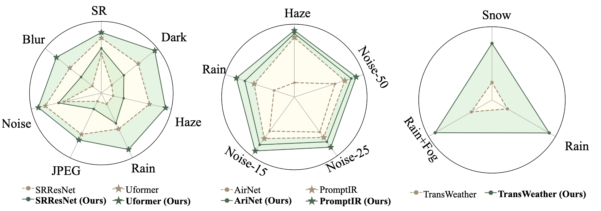
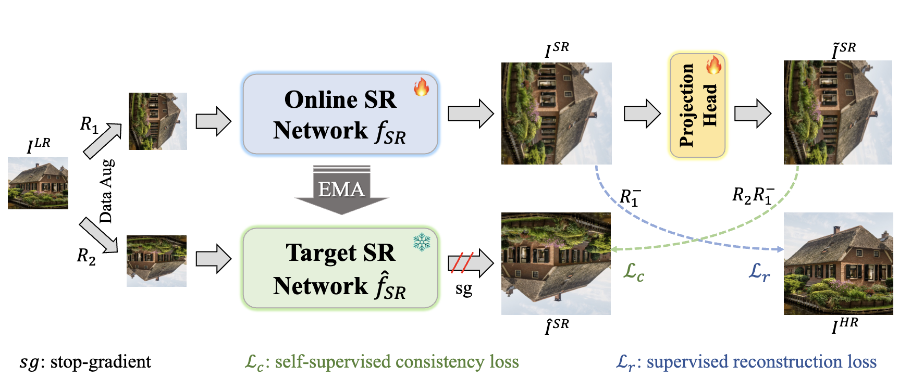
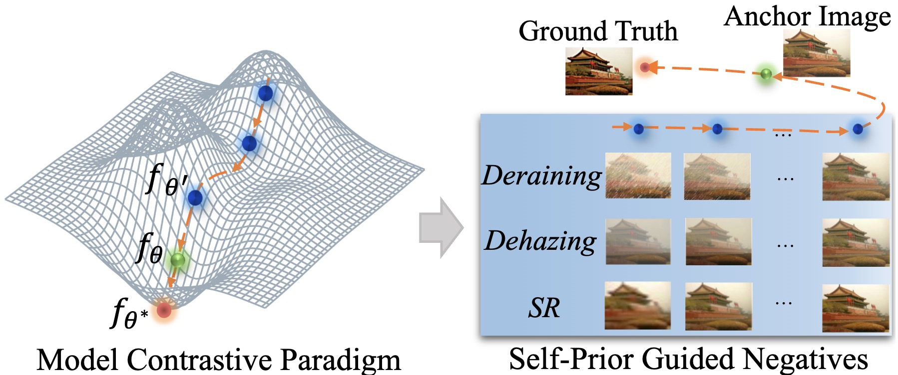
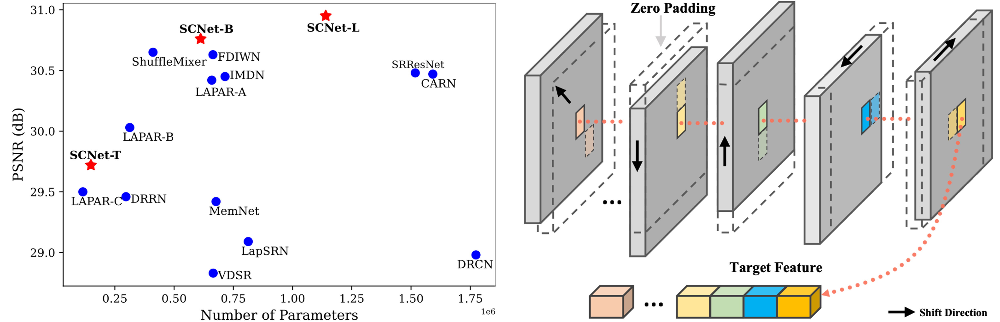
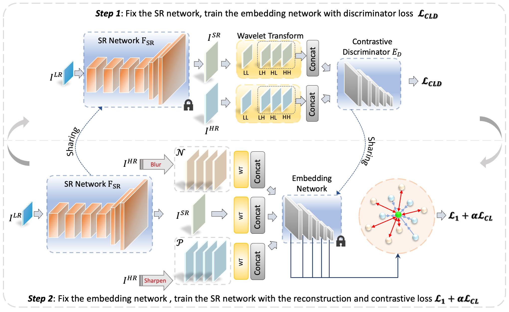
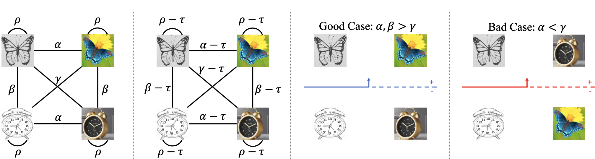
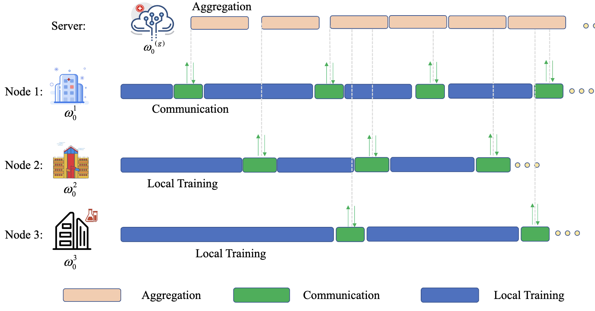
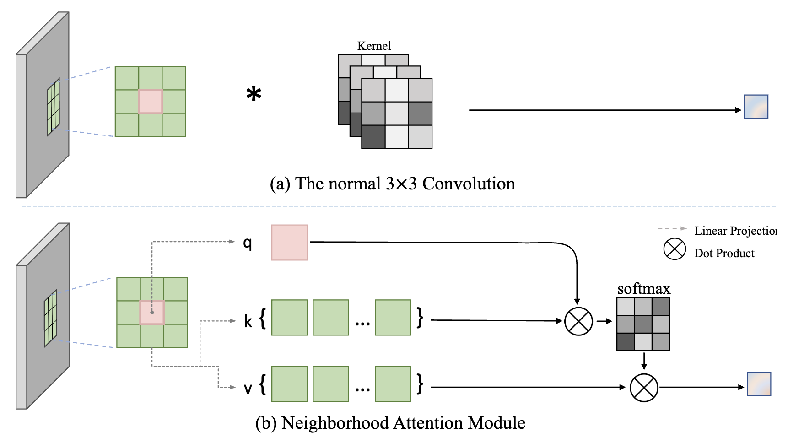
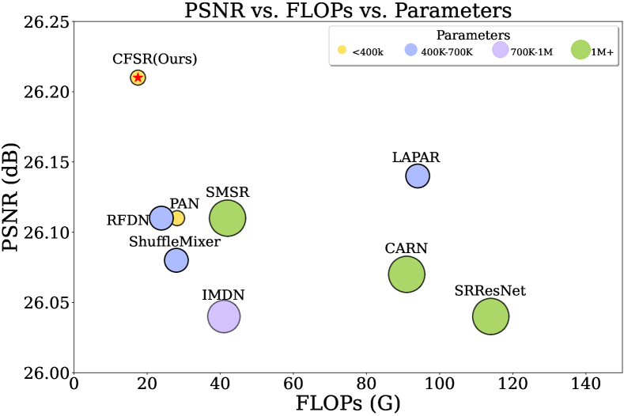

Gang Wu （吴刚）
PhD student @ HIT
I obtained my Bachelor degree from Soochow University in 2020.
Currently, I am a Ph.D. student at Harbin Institute of Technology, where I am under the supervision of Prof. Junjun Jiang.
Mainly intrest in computer vision, especially in Low-level Vision and Representation Learning.
News
- 2024-04: One first author paper was accept in ICME 2024 (Oral).
- 2024-01: One first author paper was accepted in Machine Intelligence Research.
- 2024-01: One paper to appear in ICLR 2024 .
- 2023-12: One first author paper was accepted in AAAI 2024.
- 2023-05: One first author paper was accepted in IEEE Trans. Neural Networks Learn. Syst.
- 2023-04: One paper to appear in ICML 2023.
- 2023-04: One paper to appear in CVPRW 2022.
Education
Publications
|  |
Under Review
Harmony in Diversity: Improving All-in-One Image Restoration via Multi-Task Collaboration
[Code] and [Paper] are coming.
|
|  |
ICME, 2024 (Oral)
Exploiting Self-Supervised Constraints in Image Super-Resolution
[Code]
[Arxiv]
|
|  |
AAAI, 2024
Learning from History: Task-agnostic Model Contrastive Learning for Image Restoration
[Project]
[Code]
[Arxiv]
🔥 The extended journal version is under review. |
|  |
Machine Intelligence Research, 2024
Fully 1×1 Convolutional Network for Lightweight Image Super-Resolution
[Code]
[Arxiv]
|
|  |
IEEE Trans. Neural Networks Learn. Syst., 2023
A Practical Contrastive Learning Framework for Single-Image Super-Resolution
[Code]
[Arxiv]
|
|  |
ICLR 2024
Zero-Mean Regularized Spectral Contrastive Learning: Implicitly Mitigating Wrong Connections in Positive-Pair Graphs
[Code]
[Paper]
|
|  |
ICML 2023
No one idles: Efficient heterogeneous federated learning with parallel edge and server computation
[Code]
[Paper]
|
|  |
Arxiv
Incorporating transformer designs into convolutions for lightweight image super-resolution
[Code]
[Arxiv]
|
|  |
Arxiv
Transforming Image Super-Resolution: A ConvFormer-based Efficient Approach
[Code]
[Arxiv]
|
Experience
Academic Service & Awards
Competition Awards
ICRA 2023 RoboDepth Challenge, 3rd place in Track 1 and Innovative Prize in Track 2.
NTIRE 2022 Image Inpainting Challenge, 2nd place in Track 1.
NTIRE 2022 Image Inpainting Challenge, 2nd place in Track 1.
Reviewer
The International Conference on Learning Representations (ICLR)
The International Joint Conference on Artificial Intelligence (IJCAI)
The International Conference on Machine Learning (ICML)
ACM Multimedia (ACM MM)
IEEE International Conference on Acoustics, Speech, and Signal Processing (ICASSP)
IEEE International Conference on Multimedia and Expo (ICME)
IEEE Transactions on Neural Networks and Learning Systems
IEEE Transactions on Circuits and Systems for Video Technology
IEEE Transactions on Multimedia
IEEE Transactions on Image Processing
Information Fusion
The International Joint Conference on Artificial Intelligence (IJCAI)
The International Conference on Machine Learning (ICML)
ACM Multimedia (ACM MM)
IEEE International Conference on Acoustics, Speech, and Signal Processing (ICASSP)
IEEE International Conference on Multimedia and Expo (ICME)
IEEE Transactions on Neural Networks and Learning Systems
IEEE Transactions on Circuits and Systems for Video Technology
IEEE Transactions on Multimedia
IEEE Transactions on Image Processing
Information Fusion